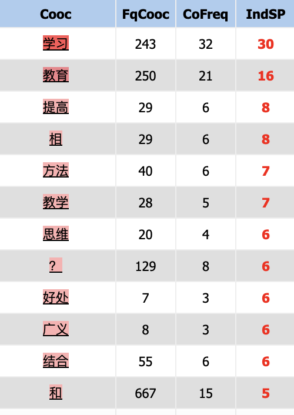

Pour le processus de lemmatisation, le chinois n'est pas concerné de la même manière que le français ou l'anglais. Contrairement à ces derniers,
la langue chinoise ne fléchit pas les mots selon le temps, le cas où le nombre.
Cela signifie que les mots ne changent pas de forme en fonction de ces aspects grammaticaux. Les noms restent généralement invariables, sans inflexion pour le nombre ou le cas.
Par exemple, le nom "jeu" (游戏, yóuxì) reste le même, qu'il soit au singulier ou au pluriel.
Nous avons observé que les mots les plus fréquents sont des particules chinoises qui expriment des relations grammaticales. Le mot cible 游戏 apparaît 3750 fois dans le corpus.
dictionnaire "游戏" après chargement du corpus
Le processus de lemmatisation en chinois consiste moins à réduire un mot à sa forme de base qu'à comprendre
une combinaison de caractères dans un contexte donné. Le dictionnaire nous permet d'avoir
des informations sur toutes les combinaisons de 游戏 (yóuxì), qui se trouvent dans le corpus,
et qui diffèrent des dérivations du mot "jeu" en français ou en anglais,
qui pourraient indiquer une catégorie grammaticale.
Les différentes formes de "游戏" dans le corpus
Les trois mots composés les plus fréquentes sont 电子游戏, signifiant jeu électronique ou jeux vidéo, suivies de 游戏化,
qui se traduit par Gamification. Cette dernière vise à motiver et
engager les utilisateurs en appliquant des éléments de conception
de jeu et des principes de jeu dans des contextes non ludiques.
Ensuite, il y a 游戏机, qui signifie manette de jeu.
D'autres termes, tels que 游戏性, signifiant gameplay,
qui met l'accent sur ce que l'utilisateur peut faire et la connexion
des joueurs avec le jeu, 游戏规则, signifiant règles du jeu,
nous montrent également comment le mot 游戏 est utilisé dans les contextes chinois.
Fait intéressant, l'une des mots composés les plus fréquentes trouvées est
"游戏化" (yóuxì huà, signifiant "Gamification"), apparaissant 76 fois.
L'analyse de cooccurrence de ce terme l'associe principalement à des concepts tels que l'étude, l'éducation et l'amélioration, reflétant une vision positive des
jeux comme outil dans des contextes éducatifs.

Coocurrences de "游戏化" dans le corpus
Nous allons maintenant procéder à l'analyse des cooccurrences,
qui vise à examiner la fréquence à laquelle les mots apparaissent ensemble.
Coocurrences de "游戏" dans le corpus
Coocurrences de "游戏" dans le corpus
Dans notre corpus, les mots les plus fréquemment associés au terme "jeu" sont
网络 (internet), 模拟 (simulation), 冒险 (aventure), 扮演 (rôle), 射击 (tir), et
策略 (stratégie). Cette analyse suggère que, dans le contexte étudié,
les jeux sont principalement liés aux jeux vidéo et à Internet comme moyen principal.
Les genres de jeux populaires semblent être la simulation, l'aventure,
le jeu de rôle et le tir, ce qui peut indiquer que les jeux vidéo offrent
souvent un moyen de s'évader de la réalité et d'adopter une identité différente.
Cela révèle les tendances actuelles dans les préférences de jeux, ainsi que la
perception et l'utilisation de ces jeux dans la société contemporaine. Un autre terme intéressant, ayant un indice de spécificité assez élevé,
est le "dating", qui n'a pas été trouvé dans les corpus français et anglais.
Cela pourrait impliquer que les jeux dans les contextes chinoises peuvent
être un moyen de socialisation et parfois répondre à certains besoins
psychologiques des joueurs.
Conclusion: L'analyse du corpus "游戏" nous montre que ce mot présente une connotation relativement neutre et est
fréquemment associé à des genres variés, tels que la simulation, l'aventure,
le jeu de rôle, ainsi que l'aventure amoureuse..Ces genres offrent aux joueurs
une évasion de leurs situations réelles, leur permettant de s'immerger dans
des réalités alternatives. Bien que l'utilisation principale soit liée au
divertissement dans les formats en ligne et de jeux vidéo, la présence
significative de termes comme "游戏化" met en lumière une perspective plus large et
positive sur le rôle des jeux dans des domaines tels que l'éducation et le développement
personnel.